Sobre o país:
Bem-vindo ao nosso espaço dedicado ao Cazaquistão, um país fascinante onde tradição e modernidade se encontram no coração da Ásia Central. Com paisagens que vão de vastas estepes a montanhas imponentes, o Cazaquistão é um território de grande diversidade natural e cultural.
Aqui, você vai explorar a rica história de um povo marcado por influências nômades, conhecer costumes únicos e descobrir como o país se desenvolveu. Além disso, apresentamos suas cidades modernas, sua economia em crescimento e suas belezas naturais.
História:
O Cazaquistão possui uma história antiga caracterizada pela presença de povos nômades que viviam nas vastas estepes da Ásia Central. Ao longo dos séculos, o território passou por diversas transformações políticas, sociais e culturais, sendo influenciado por diferentes povos e formas de organização. Com o tempo, desenvolveu sua identidade própria, mantendo tradições ao mesmo tempo em que se modernizou.
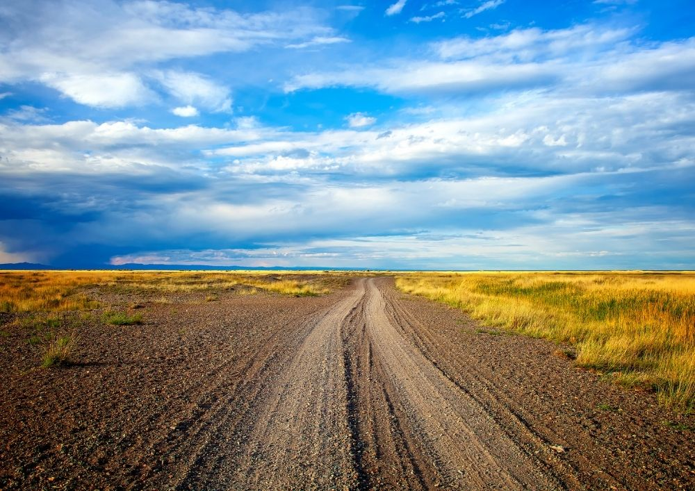
Durante a Antiguidade e a Idade Média, a região foi influenciada por importantes rotas comerciais, como a Rota da Seda, que conectava o Oriente ao Ocidente. Esse contato trouxe diversidade cultural, religiosa e econômica ao território.
No século XIII, o território foi conquistado pelo Império Mongol liderado por Genghis Khan, o que marcou profundamente a organização política e social da região.
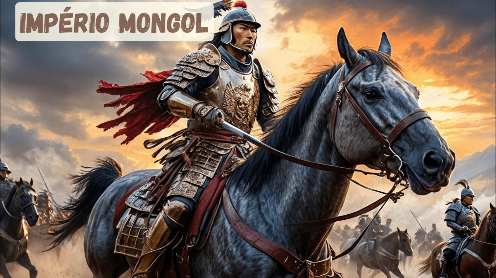
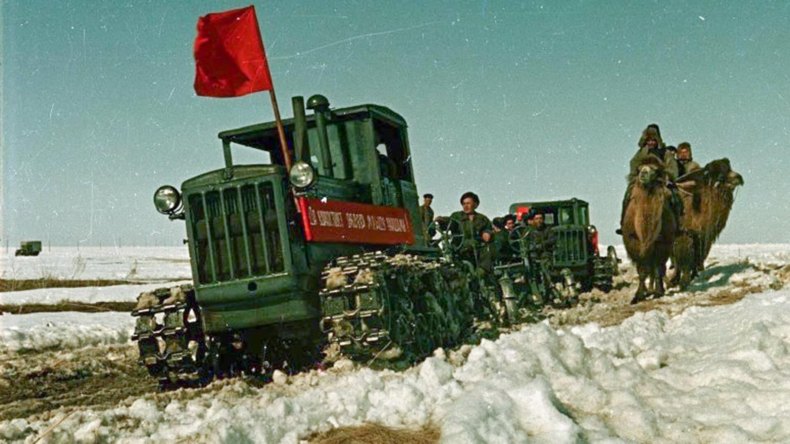
Séculos depois, o Cazaquistão passou a integrar o Império Russo e, posteriormente, tornou-se parte da União Soviética. Durante esse período, houve forte industrialização, mas também impactos culturais e sociais significativos.
O país conquistou sua independência em 1991, após o fim da União Soviética. Desde então, o Cazaquistão tem se desenvolvido como uma nação moderna, mantendo suas tradições e investindo em crescimento econômico e infraestrutura.
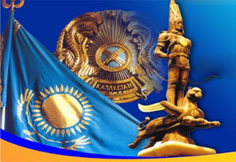
Cultura:
A cultura do Cazaquistão foi construída ao longo de séculos por meio da convivência entre povos nômades, influências asiáticas e tradições preservadas até os dias atuais. Os costumes do país refletem sua forte ligação com as estepes, os cavalos, a música tradicional e a hospitalidade, considerada uma das maiores características do povo cazaque.
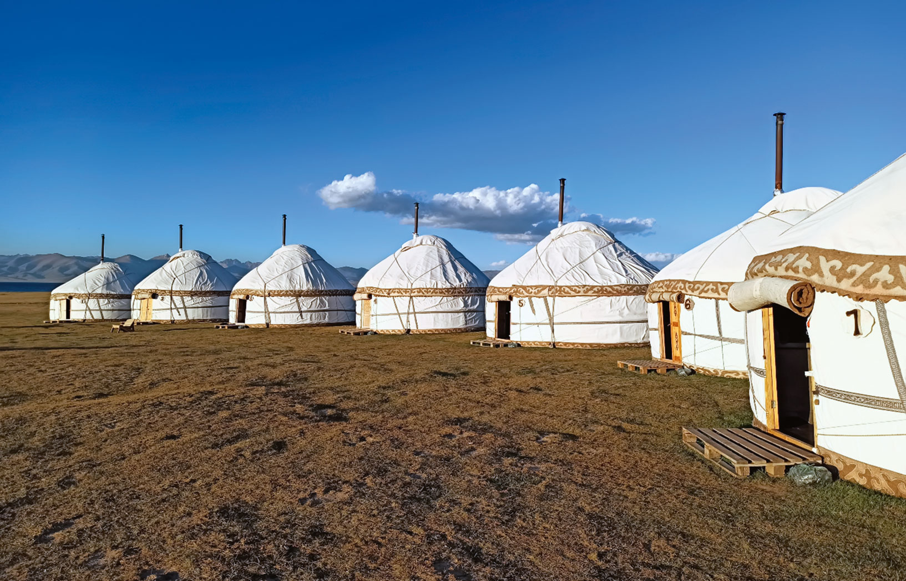
Desde os tempos antigos, os povos nômades viviam em tendas chamadas yurtas, que podiam ser desmontadas e transportadas facilmente pelas estepes. Esse estilo de vida influenciou diretamente os costumes, as roupas e a alimentação tradicional do país.
Os cavalos sempre tiveram grande importância para a cultura cazaque. Além de serem utilizados como meio de transporte pelos antigos guerreiros nômades, também simbolizam liberdade, força e identidade nacional.
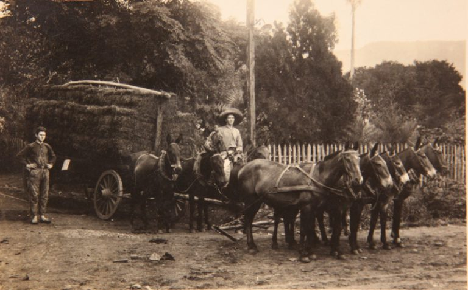
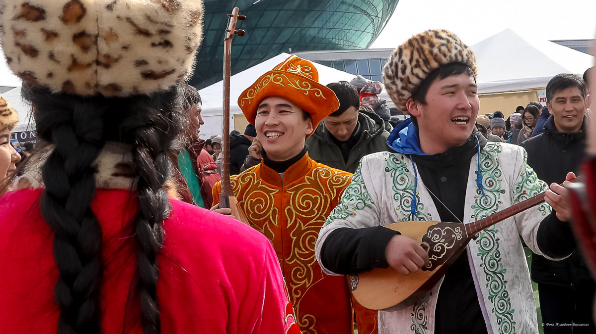
A música tradicional do Cazaquistão preserva instrumentos antigos, como a dombra, um instrumento de cordas muito utilizado em apresentações culturais e celebrações populares. As canções costumam contar histórias sobre batalhas, viagens e tradições do povo.
Atualmente, o país combina elementos tradicionais com a modernidade. Grandes cidades apresentam arquitetura moderna e avanços tecnológicos, enquanto festivais, danças típicas e comidas tradicionais continuam valorizando a herança cultural do Cazaquistão.
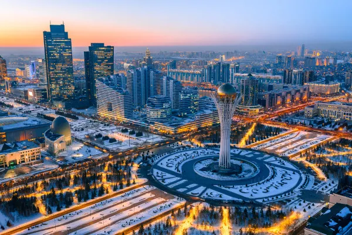
Gastronomia:
A gastronomia do Cazaquistão foi fortemente influenciada pelo modo de vida nômade dos antigos povos das estepes. Os pratos tradicionais costumam utilizar carne, leite e massas, ingredientes que eram mais fáceis de conservar durante as longas viagens realizadas pelos nômades. Atualmente, a culinária cazaque mistura receitas tradicionais com influências russas e asiáticas.
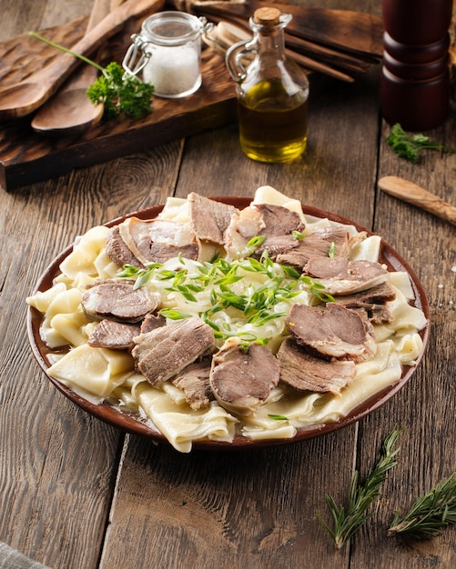
O Beshbarmak é considerado o prato nacional do Cazaquistão. Ele é preparado com carne cozida, geralmente de cavalo ou cordeiro, servida sobre massas largas e acompanhada de caldo. Tradicionalmente, o prato é consumido em reuniões familiares e celebrações importantes.
O Kumis é uma bebida tradicional produzida a partir do leite de égua fermentado. Muito consumida pelos povos nômades, a bebida possui forte valor cultural e continua presente em diversas regiões do país.
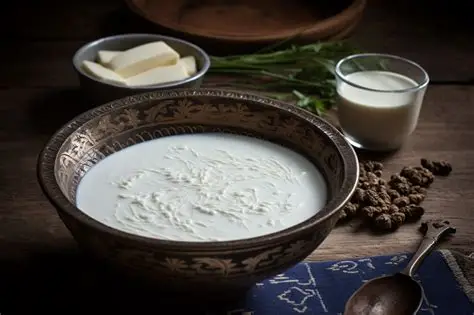
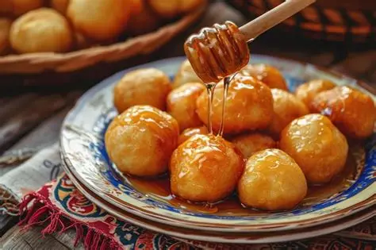
O Baursak é um pão frito muito popular na culinária cazaque. Ele costuma ser servido em festas, encontros familiares e ocasiões especiais, acompanhado de chá ou outros alimentos tradicionais.
Atualmente, a gastronomia do Cazaquistão combina pratos típicos antigos com influências modernas e internacionais. Restaurantes das grandes cidades oferecem tanto receitas tradicionais quanto culinária contemporânea, preservando a identidade cultural do país.
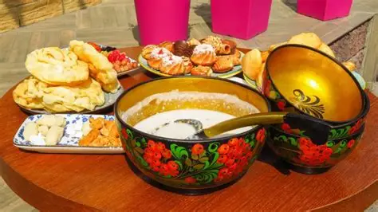
Curiosidades:
O Cazaquistão possui diversas curiosidades relacionadas à sua cultura, território e importância histórica. O país reúne elementos modernos e tradicionais, além de apresentar características únicas que o tornam um dos lugares mais interessantes da Ásia Central.
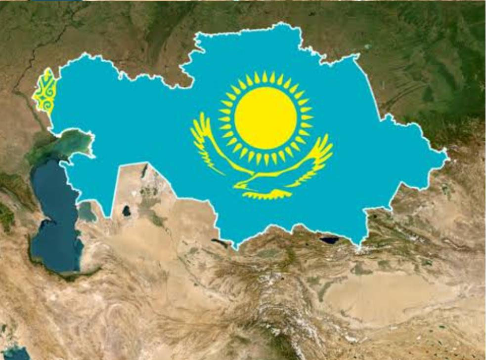
O Cazaquistão é o maior país do mundo sem saída para o mar. Seu território é extremamente vasto, ocupando uma grande área da Ásia Central e parte da Europa.
O país abriga o Cosmódromo de Baikonur, considerado a primeira e maior base espacial do mundo. Foi desse local que partiu o primeiro ser humano ao espaço, Yuri Gagarin, em 1961.
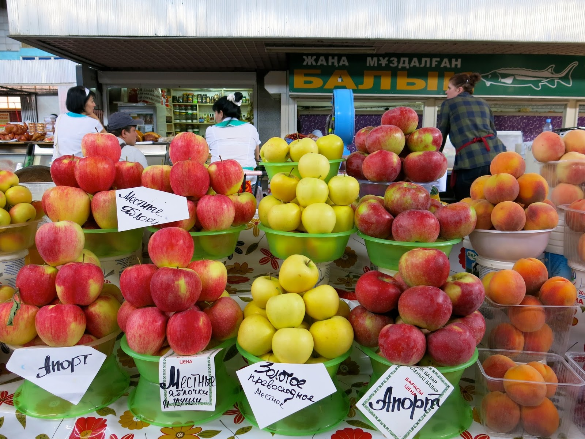
Muitas pesquisas indicam que as maçãs modernas possuem origem na região do Cazaquistão. A antiga cidade de Almaty, inclusive, tem seu nome relacionado às maçãs.
Em algumas regiões do país, ainda existe a tradicional prática de caça com águias. Essa técnica foi preservada ao longo dos séculos pelos povos nômades da Ásia Central.
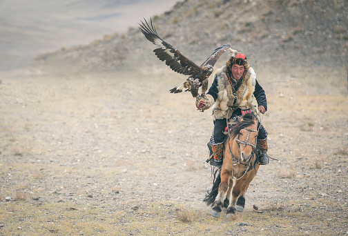
Turismo:
O Cazaquistão possui paisagens naturais impressionantes, cidades modernas e locais históricos que atraem visitantes de diferentes partes do mundo. O turismo no país combina montanhas, lagos, desertos e construções futuristas, além de preservar tradições culturais importantes da Ásia Central.
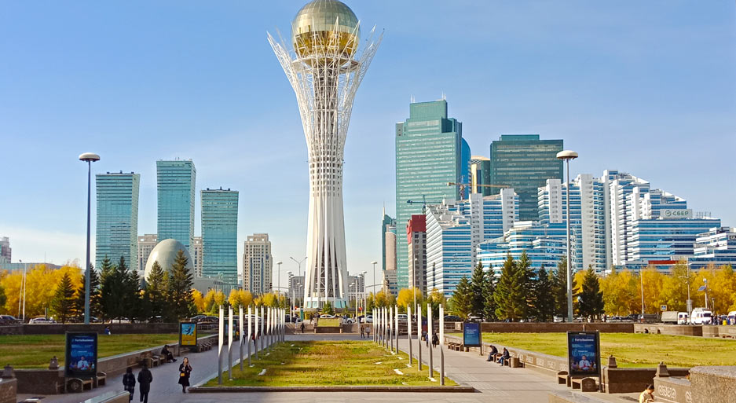
A capital Astana é conhecida por sua arquitetura moderna e futurista. A cidade possui grandes monumentos, prédios tecnológicos e centros culturais que representam o desenvolvimento recente do país.
A cidade de Almaty é um dos principais destinos turísticos do Cazaquistão. Cercada por montanhas, ela combina natureza, áreas urbanas modernas e diversas opções culturais e gastronômicas.
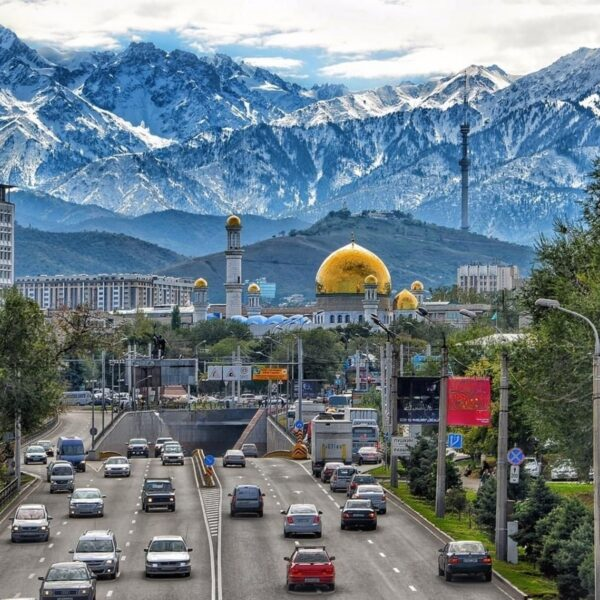
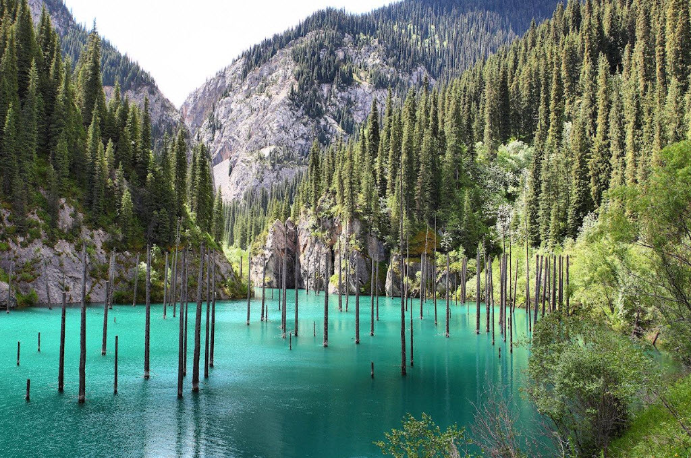
O Lago Kaindy é famoso por suas águas azuladas e pelas árvores submersas que surgiram após um terremoto. O local se tornou uma das paisagens naturais mais conhecidas do país.
O Cânion Charyn é uma das formações naturais mais impressionantes do Cazaquistão. Suas enormes rochas e paisagens desérticas atraem turistas interessados em aventura e ecoturismo.

Aqui temos uma tabela do ranking de pontos turísticos mais frequentados nos últimos anos:
| Posição: | Lugares: |
| 1° lugar | Almaty |
| 2° lugar | Astana |
| 3° lugar | Cânion Charyn |
| 4° lugar | Lago Kaindy |